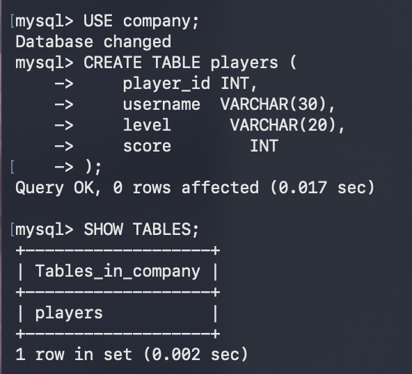
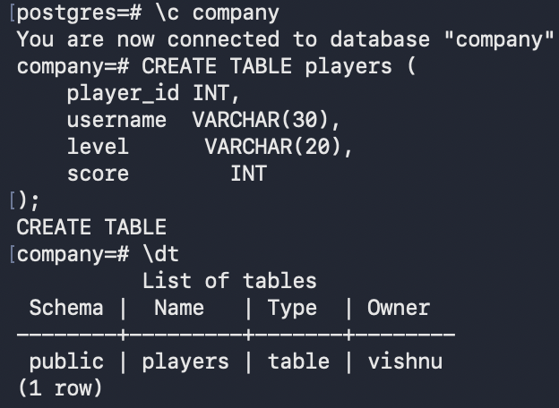
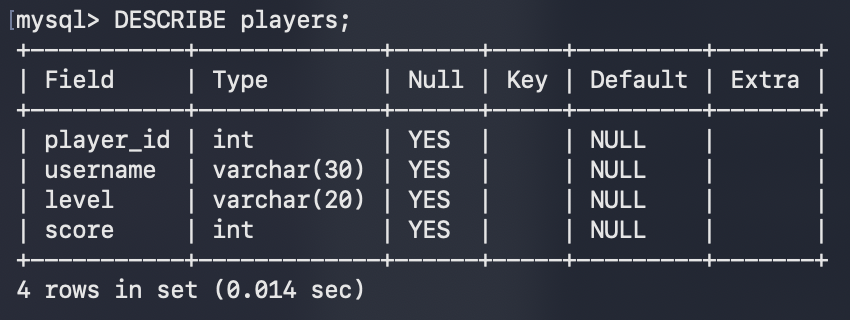
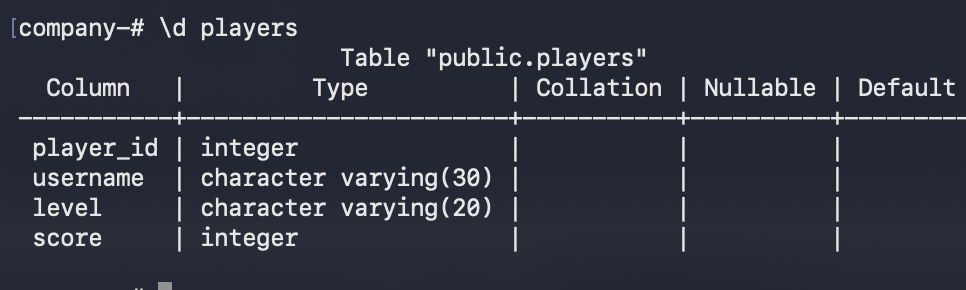

We know relational database is organized using tables.
A table stores related (aka relevant) data in rows and columns.
Standard version
MySQL / PostgreSQL
CREATE TABLE players (
player_id INT,
username VARCHAR(30),
level VARCHAR(20),
score INT
);
Best Practice using Constraints
MySQL / PostgreSQL
CREATE TABLE players (
player_id INT PRIMARY KEY, -- no duplicates
username VARCHAR(30) NOT NULL, -- every player must have a name
level VARCHAR(20),
score INT CHECK (score >= 0) -- score can't be negative
);
Constraints and actions when they are violated, will be discussed later.
Prompt
Create a new table named 'players' with the following columns:
- player_id (INT, primary key)
- username (VARCHAR of 30 characters, not null)
- level (VARCHAR of 20 characters)
- score (INT, must be non-negative)
Note: The reason why we wrote a prompt above is to encourage the use of AI-assisted accelerated workflow practices. However, if an individual is relying on AI to cover all aspects of the workflow with no oversight, it will actually become AI-dependant decelerated workflow.
This creates a table named players. And the header of the table (ref below), along with its datatypes and constraints is called the schema of the table.
| player_id | username | level | score |
|---|---|---|---|
| INT (PK) | VARCHAR(30) Not NULL | VARCHAR(20) | INT (Non-negative) |
MySQL
SHOW TABLES;
PostgreSQL
\dt
|
 |
 |
MySQL
DESCRIBE players;
PostgreSQL
\d players
|
 |
|
 |
Note: ALTER and DROP will be covered after we have data to work with.
Next: DML (Data Manipulation Language) >>
Previous: Datatypes <<